Publications
Peer-reviewed articles first, newest first, then invited articles and book chapters. Filter by research topic or jump to a year.
No publications match this topic yet.
2026
Vet Clin North Am Small Anim Pract 2026
Computer vision and deep learning in small animal cytology and slide review
Veterinary Clinics of North America: Small Animal Practice, 2026
An invited review of computer vision fundamentals for veterinary cytology, current scientific progress, and publication guidelines. Examines how nine veterinary organizations address AI in their position or policy statements, alongside industrial implementation and the case for AI literacy in continuing education.
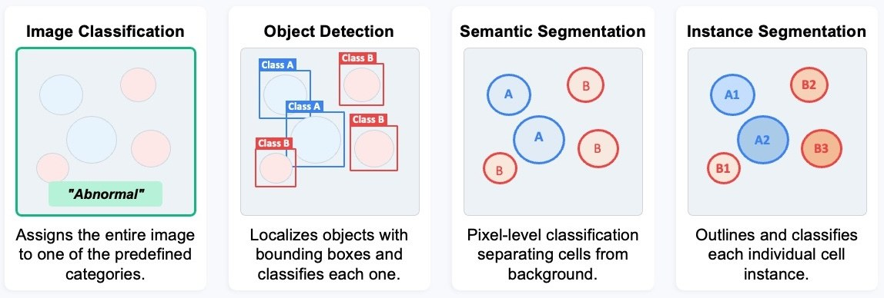
Veterinary Pathology 2026
Applying artificial intelligence to automate clinical data extraction from veterinary electronic health records: a practical guidance and comparative scoping review
Veterinary Pathology, 2026 · special issue on artificial intelligence
Screened 5,796 papers and included 54 studies (23 veterinary, 31 human) on AI-based clinical data extraction. Provides a step-by-step framework for data preparation, platform and privacy decisions, and prompt engineering, with a worked case study extracting 62 variables from canine pancreatitis records.
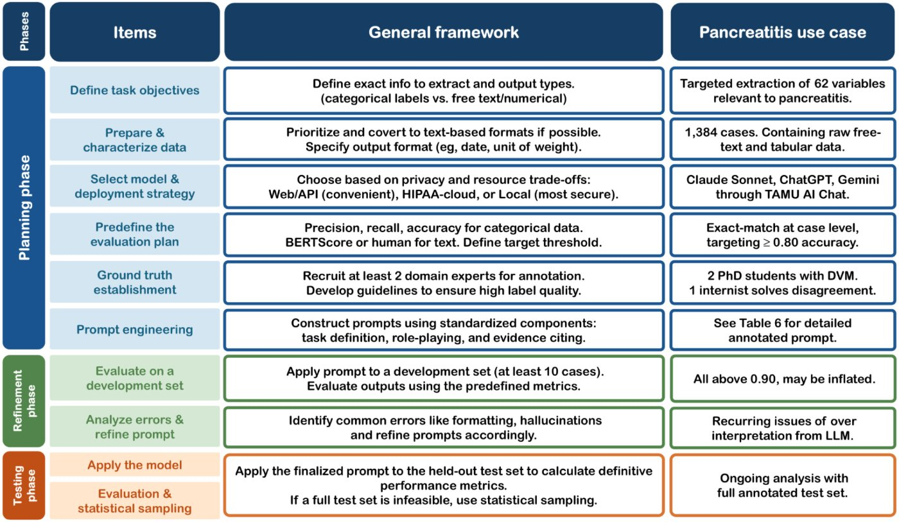
Front Vet Sci 2026
Curriculum framework for artificial intelligence literacy in veterinary education
Frontiers in Veterinary Science, 2026
A five-module framework for teaching AI literacy in veterinary curricula, with an implementation case study of VTPB 948 at Texas A&M University.
2025
Animals 2025
Renal single-Cell RNA sequencing and digital cytometry in dogs with X-linked hereditary nephropathy
Animals, 2025
Applied single-cell RNA sequencing to profile renal cortical tissues from dogs with X-linked hereditary nephropathy. Recovered over 13,000 cells and identified 11 cell types. Digital cytometry confirmed disease-related shifts in renal cell composition across CKD progression.
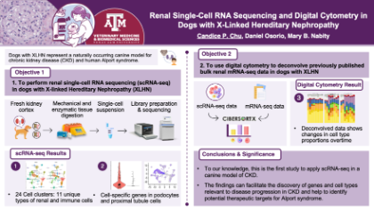
Vet Clin Pathol 2025
Urinary microRNA as biomarkers for chronic kidney disease in dogs and cats: updates and challenges
Veterinary Clinical Pathology, 2025
Comprehensive review of urinary miRNAs as non-invasive biomarkers for CKD in companion animals. Addresses preanalytical factors, RNA isolation methods, sequencing analysis, and normalization strategies.
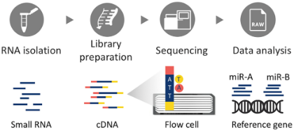
2024
Front Vet Sci 2024
ChatGPT in veterinary medicine: a practical guidance of generative artificial intelligence in clinics, education, and research
Frontiers in Veterinary Science, 2024
Practical synthesis of ChatGPT applications in veterinary clinical, educational, and research domains. Actionable guidance for professionals without a programming background.
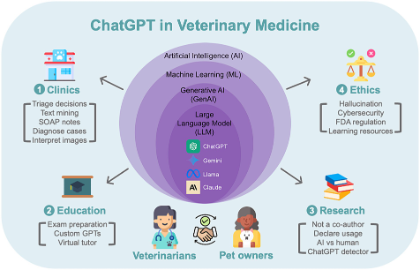
J Vet Intern Med 2024
MicroRNA-126 in dogs with immune complex-mediated glomerulonephritis
Journal of Veterinary Internal Medicine, 2024
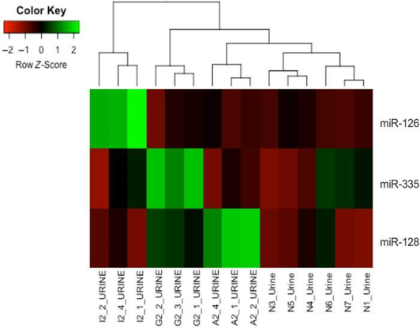
Vet Clin Pathol 2024
What is your diagnosis? Large perianal mass in a dog
Veterinary Clinical Pathology, 2024
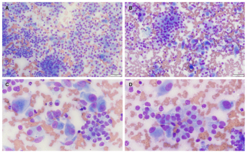
2023
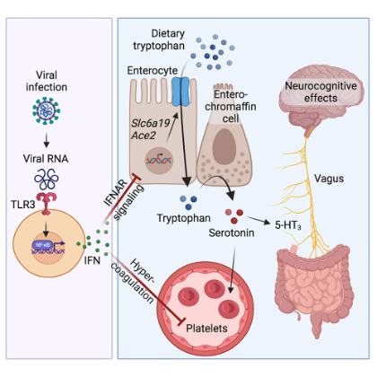
2021
Sci Rep 2021
Small RNA sequencing evaluation of renal microRNA biomarkers in dogs with X-linked hereditary nephropathy
Scientific Reports, 2021
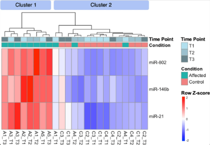
2019
Vet Clin Pathol 2019
Comparison of RNA isolation and library preparation methods for small RNA sequencing of canine biofluids
Veterinary Clinical Pathology, 2019
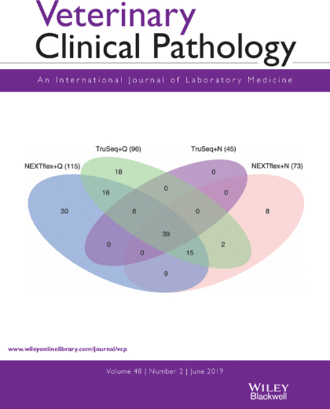
2018
PLOS ONE 2018
Expression profiling of disease progression in canine model of Duchenne muscular dystrophy
PLOS ONE, 2018
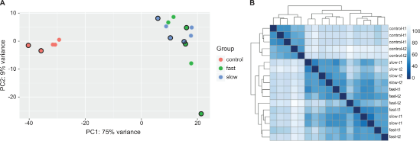
2017
Sci Rep 2017
RNA-seq of serial kidney biopsies obtained during progression of chronic kidney disease from dogs with X-linked hereditary nephropathy
Scientific Reports, 2017
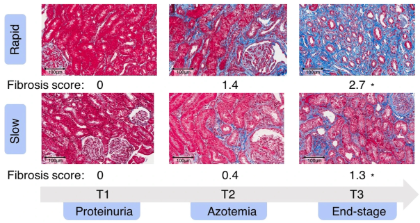
Invited Articles & Book Chapters
Nature Career column, 2024
Banish the PDF-hunting blues with these AI and digital tools
Nature, 2024
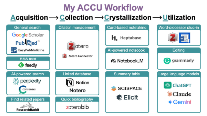
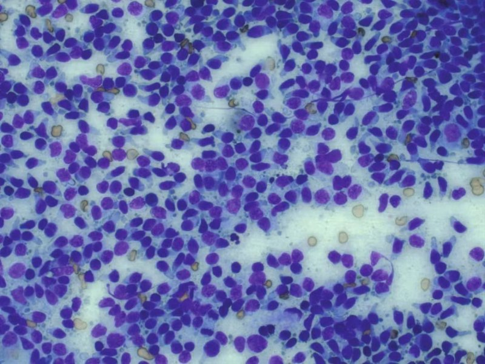
The Vetiverse, 2024
7 key aspects of pathology informatics in veterinary medicine
The Vetiverse, February 2024
Clinician's Brief, 2023
Top 3 conditions missed by skipping a urinalysis
Clinician's Brief, September 2023
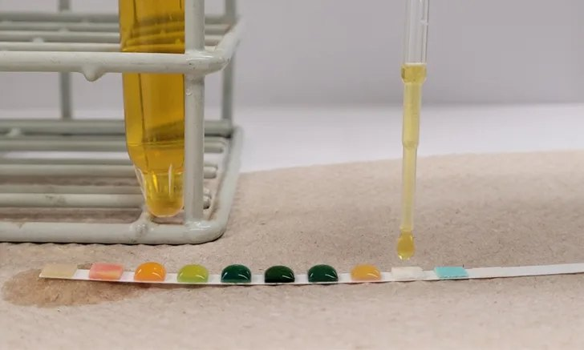
Book chapter, 2024
Differential diagnosis chapters: antithrombin III, fibrinogen, amylase, lipase, lipids, fibrin degradation products, pancytopenia
Plumb's Pro, October 2024